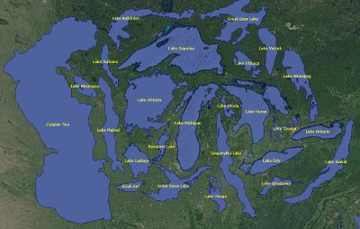

Neste problema deverá submeter uma classe ED242 contendo um programa completo para resolver o problema (ou seja, com o método main).
Não será adicionado nenhum código base ao seu programa, pelo que tem de incluir na submissão quaisquer classes que sejam necessárias para além das classes do próprio Java.
[PROBLEMAS PARA DOWNLOAD]
Para precaver uma possível intermitência na ligação de internet, podem e devem fazer download de todos os problemas em:
https://mooshak.dcc.fc.up.pt/~edados/_teste_p2_/NUM_MECANOGRAFICO.zip (onde NUM_MECANOGRAFICO deve ser substituído pelo vosso número mecanográfico)

Estruturolândia é uma bela ilha no meio do Oceano Pacífico cheia de lagos. O seu mapa pode ser visto como uma matriz de L linhas por C colunas. Cada uma das células desta matriz pode ser água ('.') ou terra ('#'). O mapa está cercado por oceano, ou seja, se fossem representadas as células à volta da matriz, seriam todas de água do oceano.
Um lago é uma região maximal de células de água conectadas pelos seus lados (vertical ou horizontalmente) que não esteja conectado ao oceano. Dito de outro modo, um lago é um conjunto de células de água tal que é possível ir de qualquer uma das células para outra célula, nenhuma das células está na borda da matriz, e não é possível adicionar mais nenhuma célula de água a esse conjunto que esteja conectada por um dos lados.
O presidente da Estruturolândia pretende alterar um pouco o terreno. Para isso tem disponível escavadoras que conseguem encher com areia uma célula de água, transformando-a numa célula de terra. O seu objectivo é saber qual o menor número de células que tem de encher com areia para que a ilha passe a ter exactamente K lagos. Nota que é garantido que inicialmente existem mais do que K lagos em Estruturolândia.
Na primeira linha de input vem um inteiro K, indicando o número de ilhas que o presidente pretende passar a ter (0 ≤ K ≤ 1000).
Seguem-se L linhas, cada uma com C caracteres que podem ser '.' (água) ou '#' (terra). É garantido que 3 ≤ L ≤ 100 e 3 ≤ C ≤ 100.
O output do seu programa deve ser uma linha contendo um inteiro: a quantidade mínima de células que devem ser enchidas para que a ilha passe a ter exatamente K lagos.
| Input 1 | Output 1 |
|---|---|
0
####
#..#
#..#
####
#..#
|
4 |
Explicação do input/output 1: em baixo não é um lago porque está ligado à borda do mapa. É necessário encher as 4 células do lado de cima.
| Input 2 | Output 2 |
|---|---|
1
##.#######.
##.##...##.
##.##..#.##
########.##
##....#####
##########.
|
6 |
Teste Prático de Estruturas de Dados (CC1007)
8 de Junho de 2020